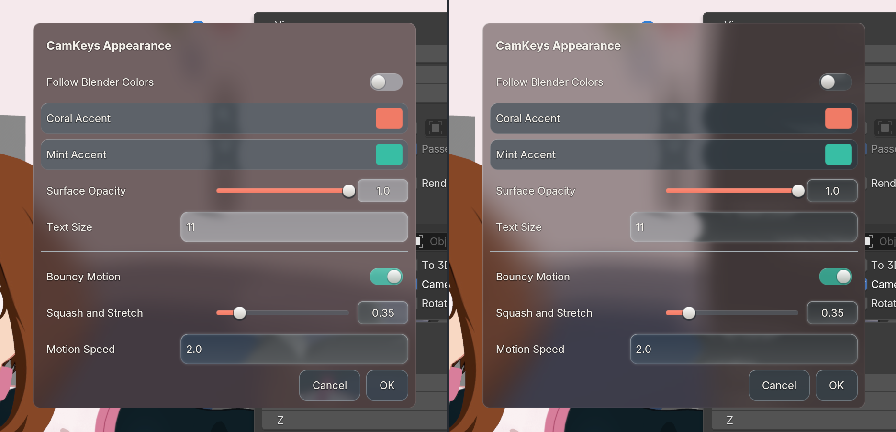
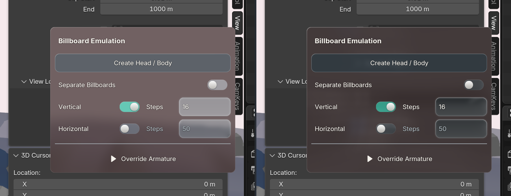
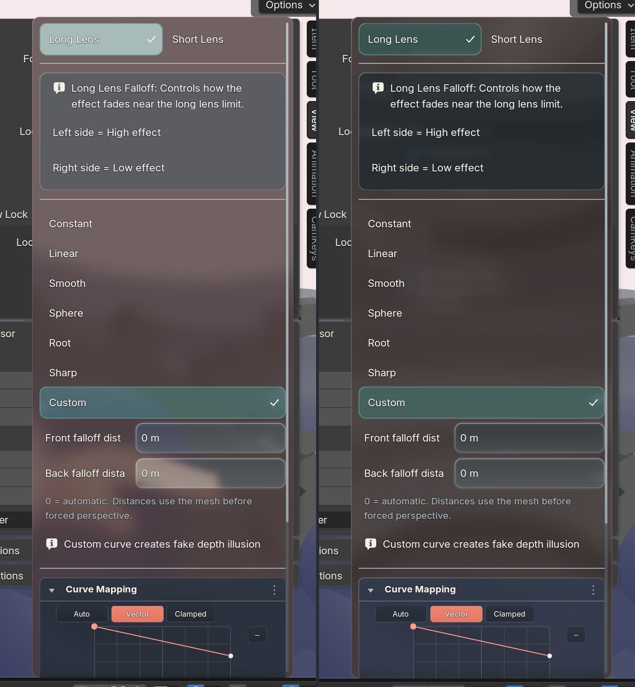

These are matched Blender 5.2.2 Metal captures from the same saved Uraraka view. Left: the previous viewport-only backdrop. Right: the popup samples the viewport, native sidebar and any BUI layers already drawn at that position.



All eleven Uraraka popup cases opened using the composed source. With the source at rest, none recaptured it on pointer motion. A separate pixel test on Metal in Blender 4.2.23, 5.1.2 and 5.2.2 confirmed a lower sheet’s blue control is visible through the upper glass and the upper sheet softens a color boundary more than ordinary panel glass. Two paints of the same two sheets produced one capture per sheet. The shared full-frame blit used by OpenGL was exercised separately on Metal. This is not a Windows GPU or frame-rate measurement.